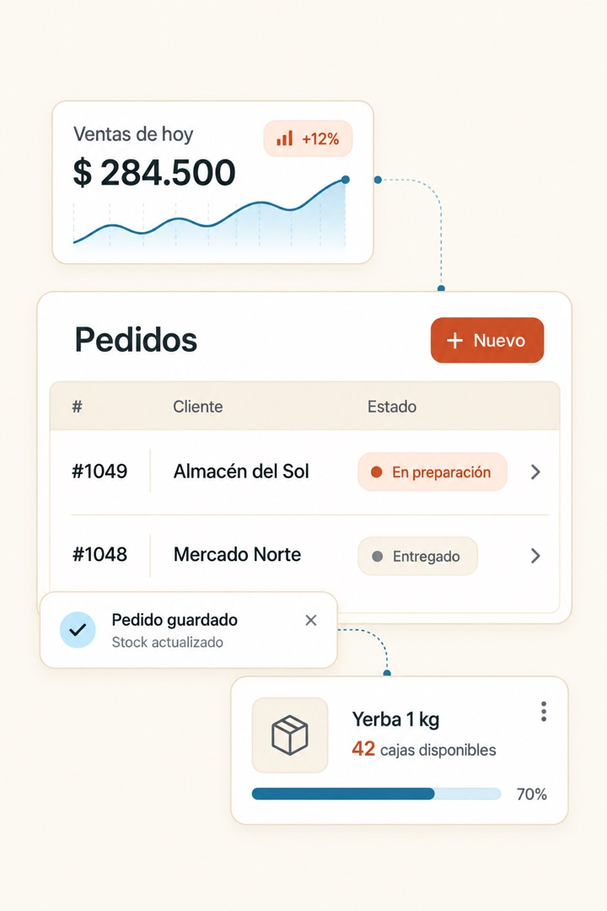
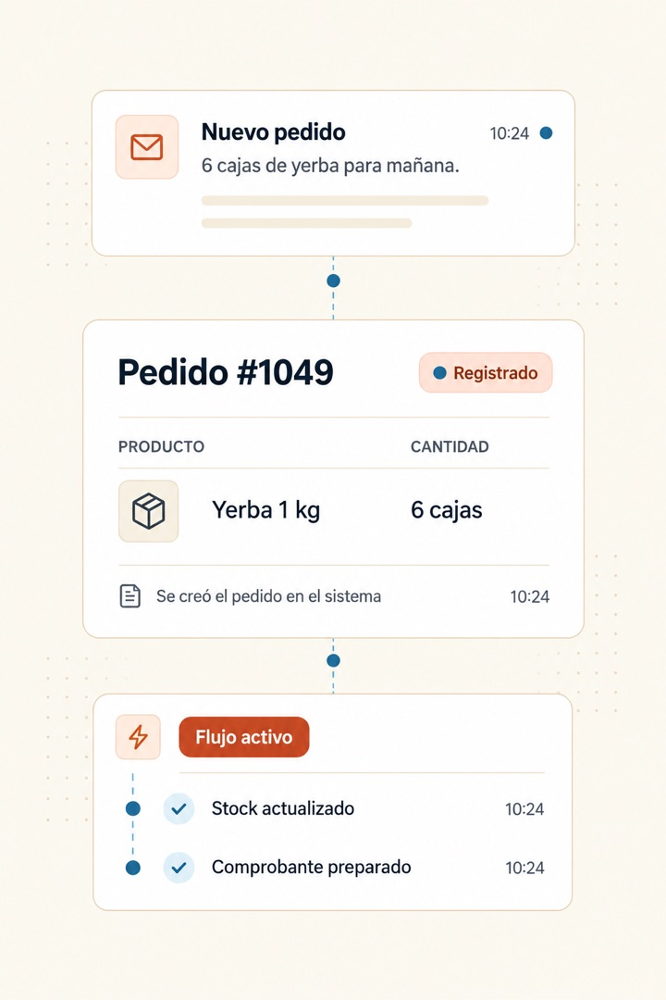
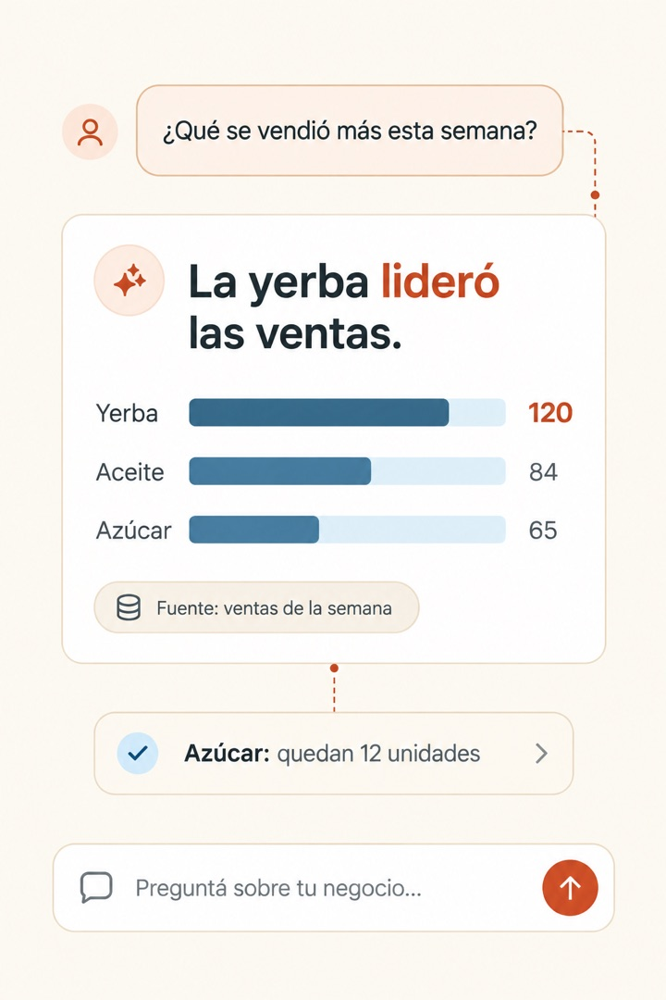

Servicios
Qué podemos construir para tu negocio
Software a medida, automatizaciones e inteligencia artificial para comercios, distribuidoras, consultorios y estudios. Elegí el que más se parezca a tu problema; si no lo ves, contanos y lo pensamos juntos.
Tres formas de sacarte trabajo de encima
-

Software a medida
Un sistema hecho para cómo trabaja tu negocio: stock, pedidos, turnos y clientes en un solo lugar, desde la compu o el celular.
Ver software a medida ↗ -

Automatizaciones
Lo que cargás a mano pasa solo de una herramienta a la otra: pedidos, stock, facturas y avisos.
Ver automatizaciones ↗ -

IA para pymes
Un asistente que responde con tu información, toma pedidos y turnos, y te pasa la conversación cuando hace falta una persona.
Ver IA para pymes ↗
También hacemos
Piezas más chicas que suelen acompañar a los tres servicios de arriba.
- BotsRespuestas automáticas por WhatsApp para las preguntas que se repiten todo el día.
- AgentesAsistentes que hacen tareas de varios pasos y te dejan el detalle de lo que resolvieron.
- IntegracionesConectamos las herramientas que ya usás para que compartan datos entre sí.
- Diseño de páginas webUna web clara, para que tus clientes te encuentren y te escriban desde el celular.
Empecemos
Contanos qué te frena
En una charla corta vemos qué conviene resolver primero.